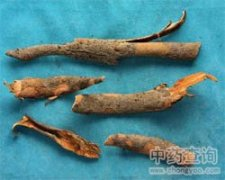

榔榆皮

拼音
Lánɡ Yú Pí
别名
朗榆皮
来源
为榆科植物榔榆的树皮或根皮。秋季采收，晒干或鲜用。
生境分布
生于平原丘陵地、山地及疏林中。分布广西、广东、台湾、湖南、江西、福建、安徽、浙江、江苏、山东、四川等地。
药材特点
榔榆，又名：樠木（《左传》），松心木（《说文》），朗榆（《本草拾遗》），榔榆（《纲目》），小叶榆、枸丝榆、秋输、豺皮榆、田柳榆。 落叶乔木，高可达25米，胸径可达70厘米。树皮灰褐色，成不规则鳞片状脱落。老枝灰色，小枝红褐色，多柔毛。单叶互生，椭圆形、椭圆状倒卵形至卵圆形或倒卵形，长1.5～5.5厘米，宽1～2.8厘米，基部圆形，稍歪，先端短尖，叶缘具单锯齿，上面光滑或微粗糙，深绿色，下面幼时有毛，后脱落，淡绿色；叶有短柄；托叶狭，早落。花簇生于叶腋；有短梗；花被4裂；雄蕊4，花药椭圆形；雌蕊柱头2裂，向外反卷。翅果卵状椭圆形，顶端有凹陷。种子位于中央，长约1厘米。花期7～9月，果期10月（浙江）。
性状
性状鉴别 树皮呈长卷曲状。外表面灰褐色，成不规则鳞片状脱落，有突出的横向皮孔；内表面黄白色。质柔韧，不易折断，断面外侧棕红色，内侧黄白色。气特异，珠淡，嚼之有粘液感。根皮表面灰黄棕色，较平滑。余同树皮。
性味
①《本草拾遗》："甘，寒，无毒。" ②《浙江民间常用草药》："性寒，味苦。"
功能主治
利水，通淋，消痈。 ①《本草拾遗》："主下热淋，利水道，令人睡。" ②《纲目》："治小儿解颅。"
用法用量
内服：煎肠，15-30g。外用：适量，鲜品捣敷；或研末，水调敷。
化学成分
树皮含淀粉、粘液质、鞣质、豆甾醇等植物甾醇；含纤维素22.3％，半纤维素10.56％，木质素25.17％，果胶8.0％，油脂7.75％。 木材含7-羟基卡达烯醛、3-甲氧基-7-羟基卡达烯醛、曼末酮C、曼宋酮G、谷甾醇。
药理作用
1：无药理作用数据
摘录
《中药大辞典》